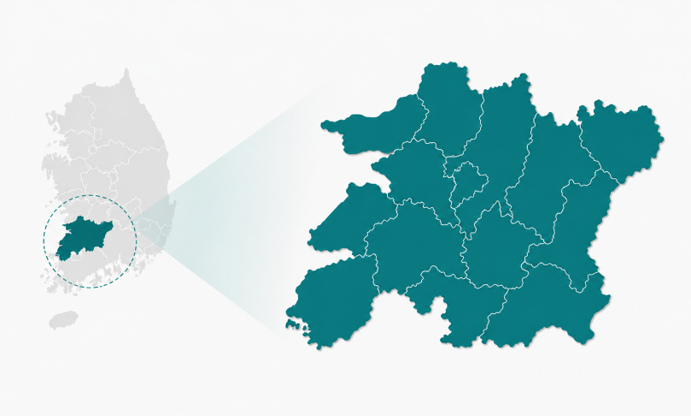
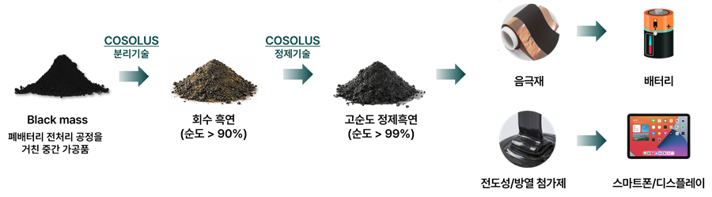
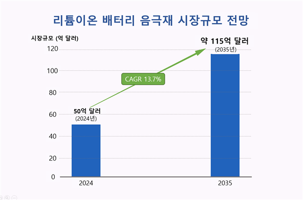
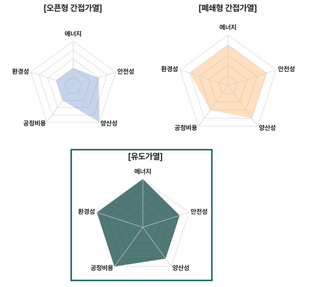
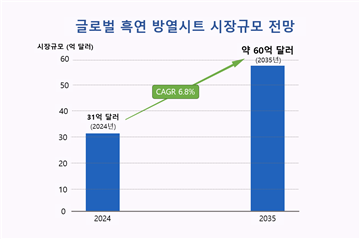

Small actions, BIG DIFFERENCE

사용 후 배터리 유래 흑연 음극재
재활용 및 고부가 소재 사업화
2026년 창업도시 조성 프로젝트 · 지역창업패키지 사업계획서 · 주식회사 코솔러스
We promise tomorrow
COMPANY
창업기업 정보
2020년 전북 전주에서 설립된 이차전지 재활용 전문기업, 흑연 음극재 재활용 사업화를 추진한다
대표자
김성현 (1975.01.02생 · 남) | 010-9565-5801 | shkim@cosolus.com
개업연월일
2020.07.02 | 사업자 유형: 법인
과제명
사용 후 배터리 유래 흑연 음극재 재활용 및 고부가 소재 사업화
매출액·투자유치·누적투자는 원본 자료에 값이 확인되지 않아 확인 전까지 공란으로 표시합니다

본사 소재지 — 전북특별자치도 전주시
2
We promise tomorrow
PROJECT
사업비 집행 계획
정부지원사업비는 공정검증·기술이전·인력교육에, 자기부담사업비는 신규인력 인건비와 기계장치 현물 대응에 집중한다
외주용역비 · 지급수수료
설비 설계, 기술이전, 회계감사
인건비 · 교육비 · 여비
울산 신규인력 채용 및 기술교육
인건비
신규인력(울산소재) 채용 인건비 현금 대응
기계장치
기술고도화를 위해 활용하는 기계장치 현물 대응
항목별 구체적 집행 금액은 원본 자료에 없어 항목·용도 중심으로 구성했습니다
3
We promise tomorrow
BACKGROUND
개발동기·목적 — 사용 후 배터리 재활용 시장 유망
현재 배터리 재활용은 양극재 중심으로만 이루어지고, 흑연 음극재는 경제성 부족으로 재활용 대상에서 제외되고 있다
리튬이온 배터리는 일반적으로 양극재·음극재·분리막·전해질로 구성됩니다. 재활용 기술은 이 핵심소재를 회수·재자원화하는 기술입니다.
현재 배터리 재활용은 NCM·NCA계 이차전지 및 양극재 공정 부산물을 중심으로 재자원화가 이루어지고 있으나, 음극재의 주요 성분인 흑연은 경제성이 낮아 배터리 재활용 대상에서 제외되고 있습니다.

사용 후 배터리 재활용 공정 모식도
4
We promise tomorrow
BACKGROUND
1-1 원천 기술·아이디어의 우수성
사용 후 배터리 재활용은 배터리 순환경제의 핵심이며, 공급망 내재화 전략으로서 중요성이 커지고 있다
사용 후 배터리 재활용은 배터리 순환경제의 핵심 — 배터리 재활용은 채굴 대비 탄소발자국 및 폐수 발생의 감소가 커 탄소중립을 실현하는 핵심기술입니다. 미국 관세정책 변화 등에 대한 공급망 내재화 전략으로서 순환경제의 중요성이 커지고 있습니다.

배터리 순환경제 모식도 — 기존 재활용 중심에서 산업 전 과정으로 확산

채굴 대비 배터리 재활용 — 온실가스 80%↓ · 폐수 50%↓
5
We promise tomorrow
BACKGROUND
전기차 폐배터리 시장 전망
전기차 보급 확대·폐배터리 급증·ESS 시장 성장이 동시에 진행되며 재활용 시장의 성장 기반을 만든다
보급률 2022년 14%→2030년 36%, 2.6배 확대
전 세계 전기차(플러그인하이브리드 포함) 보급률 2.6배 확대 전망
2030년 338GWh→2040년 3,339GWh, 약 10배 증가
사용 후 배터리 발생량이 10년간 약 10배 증가할 전망
2025년 60GWh→2028년 150GWh, 2.5배 성장
AI 데이터센터 구축에 따른 북미 ESS 배터리 시장 성장
출처: 산업통상부(2023.06) · 기후에너지환경부(2025.05) · 전력거래소(2023.08)
6
We promise tomorrow
BACKGROUND
흑연 음극재 재활용 시장 전망
흑연 재활용 시장은 빠르게 성장하지만, 배터리 핵심소재인 흑연은 대부분 폐기되고 국내 재자원화율은 0%에 머물러 있다
710억→1,680억원
흑연 재활용 시장 성장 — 2023년→2033년, 연평균 9.1% 성장 전망
28%
폐기되는 핵심소재 — 배터리 중 흑연 비중, 경제성·정제기술 부족으로 대부분 폐기
16,023kt
급증하는 흑연 수요 — 2040년 글로벌 수요 전망, 전기차·ESS 성장으로 확대
0%
국내 재활용 현황 — 2024년 흑연 재자원화율, 선별회수·고순도 정제·성능 확보 필요
출처: Graphite Recycling Market(2023–2033, Allied Market Research) · The Key Minerals in an EV Battery(2022, Visual Capitalist) · The Role of Critical Minerals in Clean Energy Transitions(IEA) · 2025년 국정감사 자료(한국광해광업공단 기반)
7
We promise tomorrow
BACKGROUND
정책 모멘텀
정부는 순환경제 생태계 조성 국정과제를 통해 음극재·분리막 재활용 기술 고도화를 신규 정책 과제로 추진하고 있다
순환경제 생태계 조성 & 폐배터리 핵심원료 회수
국정과제 중 "순환경제 생태계 조성"을 통해 음극재 재활용·회수 기술 고도화를 추진합니다.
소재 재활용과 공정 고도화 지원
배터리 순환이용 활성화 방안을 통해 소재 재활용과 공정 고도화를 정책적으로 지원합니다.
음극재·분리막 고부가 재활용 기술
음극재·분리막의 고부가 재활용 기술이 신규 정책 과제로 부상하고 있습니다.
8
We promise tomorrow
TECHNOLOGY
Cosolus 흑연 기술
블랙매스에서 흑연을 선택 분리·정제해 고순도 정제흑연을 만들고, 이를 고부가 소재로 재자원화한다
흑연 음극재 재활용 — 사용 후 배터리 블랙매스에서 흑연 음극재를 선택적으로 분리 및 정제하여 고순도 정제흑연을 제조합니다.
고부가 음극재 재활용 흑연 소재 — 고순도 정제흑연을 배터리 음극재용 흑연(실리콘-흑연 복합 음극재의 전구체로 사용 가능), 전도성 첨가제, 방열 첨가제 등 고부가가치 소재로 재자원화한 제품을 제조합니다.

흑연 소재화 모식도 — Black mass → 회수 흑연 → 고순도 정제흑연 → 음극재/전도성·방열 첨가제
9
We promise tomorrow
TECHNOLOGY
기술 개발 현황
TRL 6 기술과 연 1.5톤 파일롯 기반을 확보했다
강산(HF)을 사용하지 않는 친환경 고순도화 공정
유도가열로 1분 이내 1,000℃ 도달 · 99% 이상 순도
연 1.5톤 규모 시제품 파일롯 설비 구축 중

SEM 분석 결과 — 정제 단계별 흑연 함량 26.1% → 89.5% → 99.3%

코솔러스 유도가열 정제설비
10
We promise tomorrow
TECHNOLOGY
기술고도화 로드맵
2026년 울산 사업장 구축을 시작으로 2028년 기술라이센싱까지 단계적으로 고도화한다
2026
울산 사업장 구축
한국에너지기술연구원 기술이전 · Series A 투자 유치(파일롯 설비 구축 및 기술검증)
2026~2027
파일롯 제조기술 확보
고순도 정제흑연 기반 음극재, 전도성/방열 첨가제 시제품 양산 연계 파일롯 제조 기술 확보
2027
설비·공정 자동화
AI/DX 기반 설비·공정 자동화 추진
GOAL · 2028
고순도 정제흑연 및 기술라이센싱
고순도 정제흑연 사업화 및 기술 라이센싱 추진
11
We promise tomorrow
TECHNOLOGY
기술개발 인력
CEO 산하 CTO·CSO·COO 체계로 기술개발·사업화 조직을 구성하고 있다

코솔러스 조직도 — CEO(경영지원팀) · CSO(AI혁신팀) · CTO(기업부설연구소: 개발1~3팀) · COO(기술영업팀·생산1팀)
12
We promise tomorrow
TECHNOLOGY
보유 기술 및 인증 현황
특허 등록 8건·국내출원 11건·PCT 4건 등 총 23건의 지식재산권과 6종의 정부·기관 인증을 보유하고 있다
특허 현황 — 총 23건
| 특허명 | 구분 |
|---|
| 블랙매스 침출액으로부터 리튬을 회수하는 혼합 추출제 및 이를 사용한 리튬 회수방법 | 등록 |
| 폐배터리에서 흑연을 회수하는 방법 | 출원 |
| 마이크로웨이브를 처리하여 폐흑연을 정제하는 방법 및 고순도흑연 | 출원 |
| 사용 후 배터리로부터 폐양극재와 폐음극재의 분리방법 | 출원 |
대표 특허 4건 — 전체 23건 중 원문 확인 사례
13
We promise tomorrow
MARKET
흑연 음극재 시장 성장가능성
글로벌 음극재 시장은 2035년 115억 달러로 성장하지만, 한국은 흑연 원료의 중국 의존도가 97~99%에 달해 공급망 재편이 필요하다
글로벌 음극재 시장

출처: Lithium-Ion Battery Anode Market(2026–2034), Fortune Business Insights
한국의 중국 의존도 & 글로벌 규제
미국·EU 규제로 역내·우호국 공급망과 재활용 소재 수요가 확대되고 있습니다.
출처: Energy Act of 2020 · Regulation(EU) 2023/1542(2023.08.17 시행)
14
We promise tomorrow
MARKET
사업화 모델
정제흑연 판매에서 고부가 소재로 수익원을 확장하며, 2027년 1억원에서 2029년 50억원 매출을 목표로 한다
1단계 — 공정 확보
고객 요구 정제비용 USD 2/kg 수준의 공정 확보
2단계 — 정제흑연 판매
배터리용 고순도 정제흑연 판매
3단계 — 고부가 제품 확대
전도성 코팅액·방열레진 등 고부가 제품 확대

매출 목표 — 2027년 1억원 → 2029년 50억원 (정제흑연 판매+고부가 소재 확대)
15
We promise tomorrow
MARKET
고객사 분석
국내 배터리 3사와 음극재 기업을 중심으로 약 1조원 내수시장이 추정되며, 중국산 대체를 원하는 한국·일본·유럽 수요를 공략한다
수요처 — 배터리 3사 · 음극재 기업
약 1조원 내수시장 추정
중국산 대체와 공급망 안정성을 원하는 한국·일본·유럽 수요를 공략합니다. 국내 배터리 3사(삼성SDI·LG에너지솔루션·SK온)의 음극재 수요를 기반으로 국내 음극재 시장 규모는 약 1조원으로 추정됩니다.
16
We promise tomorrow
STRATEGY
경쟁사 대비 우수성
유도가열 공정은 경쟁사의 초고온 간접가열보다 빠르고 효율적이다
|
|
BTR |
Vianode |
| 국가 |
한국 |
중국 |
노르웨이 |
| 기술 |
유도가열 (~950℃) |
오픈형 간접가열 (3,000℃) |
폐쇄형 간접가열 (3,000℃) |
| 처리시간 |
1분 이내 |
~24시간 |
~48시간 |
| 특징 |
낮은 에너지 소비량 |
높은 에너지 소비량 |
보통 수준의 에너지 소비량 |

5개 기준(에너지·안전성·양산성·공정비용·환경성) 종합 비교 — 코솔러스 유도가열이 전 기준에서 우위
17
We promise tomorrow
STRATEGY
시장확대방안
음극재 소재 활용을 넘어 전도성·방열 첨가제 등 고부가 업사이클 제품으로 확장 가능하다
전자소재 — 전도성 첨가제
목표 고객사: S사 1차 벤더 XX하이테크
방열소재 — 방열 첨가제
목표 고객사: XX시냅스
그래핀 원료 — 차세대 소재
목표 고객사: XX쎄미켐
고순도 정제흑연의 그래핀 제조 원재료 활용성을 모색하고, 전자소재·방열 소재 등 신규 시장 진입을 통한 사업 확장을 기대합니다.

방열시트 시장 CAGR 6.8%

BM 시장 CAGR 5%
18
We promise tomorrow
INVESTMENT
투자 유치 계획
양극재·음극재 사업화 자금 61억원을 유치했으며, 2026년 Series A2에 이어 2028년 Series B를 준비 중이다
투자 유치 현황
61억원
양극재 소재 및 음극재 사업화 자금 유치
2025 · Series A1에코프로의 투자사 에코프로파트너스로부터 투자유치
< 외부 투자 유치 실적 >
투자 유치 계획
2026 · Series A2글로벌 시장 진출을 위한 해외투자 전략적 유치 — 2026년 07월 MYSC로부터 10억원 투자 유치 확정
2028 · Series B자체 생산설비 구축을 위한 투자금 확보
19
We promise tomorrow
LOCALIZATION
울산 기술사업화 계획
사업장 구축부터 시제품 생산·고객 검증까지 4단계로 울산 기술사업화를 추진한다
① 사업장·파일롯 라인
사업장 구축 및 흑연 음극재 재활용 파일롯 라인 설치
② 기술이전·공정융합
연구원 기술이전 + 코솔러스 공정 융합·고도화
③ 인력 채용·공동연구
울산 석·박사급 인력 채용과 공동연구
④ 생산·검증
시제품 생산·고객 검증·시장경쟁력 확보

흑연 재활용 파일롯 설비 라인
20
We promise tomorrow
LOCALIZATION
지역 활성화
울산 내 대·중견기업과의 거래·협업을 추진하고, 지역 청년 인력 우선채용으로 지역 사업화 네트워크를 구축한다
지역 내 거래 계획
고려아연 · LS MnM · 코스모화학
울산 이차전지 특화단지 내 양극재 재활용 사업 추진 기업과의 협업 모색
현대자동차
폐배터리 신규 공급망 프로젝트 참여 협의
지역 내 고용 계획
지역 청년 생산인력 채용
시제품 양산 전환 시 지역 청년 생산인력을 우선 채용할 계획입니다.
지역 사업화 네트워크 구축
대학·연구기관·기업이 참여하는 지역 사업화 네트워크를 구축합니다.
21
We promise tomorrow
RELOCATION
지역이전 실행계획
2026년 말부터 본사·부설연구소·파일롯 공장을 울산 이차전지 특화단지로 단계적으로 이전한다
2명 → 10명
이전 규모 — 연구·파일롯 인력
핵심 목표 — 고순도 정제흑연의 실증·양산 기반을 구축하고 글로벌 음극재 재활용 시장에 진출합니다.
울산 이차전지 특화단지 (이전 예정지)
양극재·음극재·전해질·분리막 공급선도기업, 전기차·재사용/재활용 기업이 집적된 전주기 특화단지
22
COSOLUS, small actions, BIG DIFFERENCE
흑연 음극재 재활용으로 배터리 순환경제를 선도하고, 울산 이차전지 산업의 성장을 함께 만들어가겠습니다.
주식회사 코솔러스 · 대표 김성현 | shkim@cosolus.com | 010-9565-5801
전북특별자치도 전주시(본사) → 울산광역시 이차전지 특화단지(이전 예정)